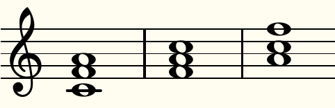
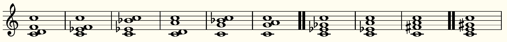

Section 4 Chords
Similar to scales, there is much literature on the mathematics of musical chords giving, e.g., interesting group-theoretic connections, both in music theory (see, e.g., [11]) and algebra (see, e.g., [6]). These tend to concern movements in a given musical piece, such as transpositions and inversions.
But why do we perceive, say, a major triad as more pleasant than a chord consisting of three notes separated by two half tones? One could make an argument that the appreciation of chords is to a large extend culturally based. On the other hand, acoustics (see, e.g., [9]) offers some explanations, e.g., by looking at the wave forms of chords containing a perfect forth. (Many piano tuners start with forths for the same reason, though they listen for beats in order to achieve an equal-tempered scale.) This gives rise to much interesting mathematics (see, e.g., [7]) and statistics (see, e.g., [8, 10]). However, the mathemusical literature seems to contain few studies on musical chords in analogy with the afore-mentioned simple-fractions intervals. Our aim is to develop a mathematical model that might fill some of these gaps.
Capturing a numerical value of a given chord relies on fixing a scale, and different scales will yield different numerics. We will develop a model and then try it out on different scales; all of them will be just scales, i.e., ones with simple rational frequency ratio (as opposed to, e.g., the equal-tempered 12-note scale, in which each interval has a frequency ratio equal to a power of \(\sqrt[12] 2\text{;}\) see [4] for a mathematical interplay between just and equal-temperament scales). It is this feature that will allow us to study chords from an basic mathematical perspective.
1
Here simple refers to fractions whose numerator and denominator are not too large. We will have more to say about this later.
For the sake of simplicity, we discuss triads (chords with three distinct notes) on a 12-notes scale; our model can be adapted to any set of chords with the same number of notes on a scale with any number of notes.
The underlying space of triads is \(\ZZ_{ 12 }^3\) with the planes \(x_1 = x_2\text{,}\) \(x_2 = x_3\text{,}\) and \(x_3 = x_1\) taken out; thus we encode the twelve half tones by the elements in \(\ZZ_{ 12 }\text{,}\) say starting with C as 0, C\(\sharp\) as 1, D as 2, etc., ending with B as 11. Computing modulo 12 means we do not distinguish between a given note and its octave. We develop further equivalencies, such as the following (we think) reasonable assumptions:
- (a)
- chords that are translates of each other (e.g., E-minor and F\(\sharp\)-minor) are equivalent;
- (b)
- chords that are inversions of each other (e.g., in Figure 4.1) are equivalent.
2
Considering only equivalence (b) means the space of triads becomes \(\ZZ_{ 12 }^3/S_3\text{,}\) a discrete version of an orbifold [13].

Our model will assign each triad a numerical value which we call its weight, and any two equivalent chords will have the same weight. It is based on a given scale, from which we assign a value (which we will call interval fraction) to each interval; the weight of a given triad equals the sum of all numerators and denominators of all interval fractions appearing in the triad. Let’s denote the respective interval fractions by \(h_1\) (for a semitone), \(h_2\) (whole tone), \(h_3\) (minor third), …, \(h_{ 11 }\) (major seven). When computing the weight of a chord, another natural assumption is that
- (c)
- chords with the same set of interval fractions (e.g., G-minor and G-major, each of which contain one major and one minor third) are equivalent.
3
At this point we would be remiss not pointing out the infamous question in harmony theory why major and minor chords are different in character from one another to our ears; our equivalence (c) demands that our model does not prefer one over the other.
It is an amusing combinatorial problem to count the resulting equivalence classes. By the translation equivalence (a), we may consider only triads that contain the note C. There are seven equivalence classes consisting of triads with distinct distances (and so they contain six chords each), four equivalence classes consisting of triads with two distinct distances (containing three chords each), and one class consisting of a single triad in which the three notes have equal distance; Figure 4.2 shows one equivalence class each (for ease of computing intervals, we repeated the C).
